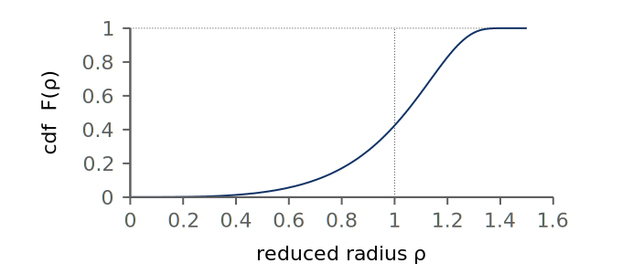
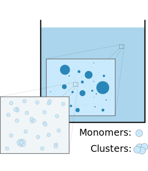
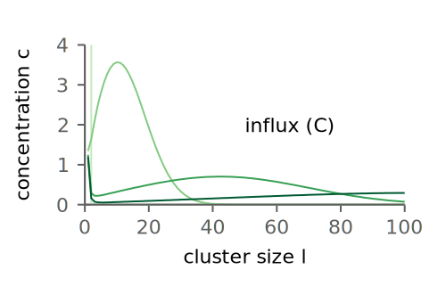
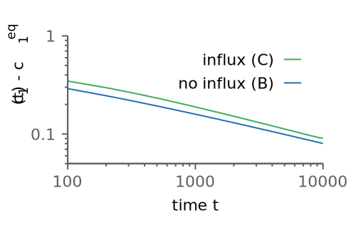
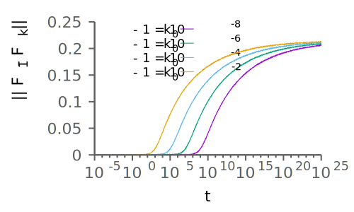
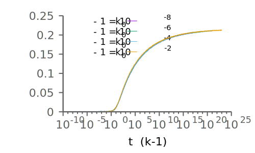

Georg-August University Göttingen Max-Planck Institute for Dynamics and Self-Organization
2016/08/17
\( ~\)
Lifshitz-Slyozov-Wagner Theory
Ostwald Ripening
Lifshitz-Slyozov-Wagner Theory
The LSW Model
$$\partial_t n(v, t) = \partial_v \big(\dot{v}(t)\,n(v, t)\big)$$ $$\dot{v}(t) = \frac{v^{1/3}}{r^\mathrm{c}(t)} - 1$$
$$0 = \frac{\mathrm{d}}{\mathrm{d} t}V_0 = \int_0^\infty \!\!\!\!\!v~\partial_t n(v, t)\,\mathrm{d}v \quad~ \Longrightarrow\quad~ \quad $$ $$ r^\mathrm{c} = \langle r \rangle $$
Lifshitz-Slyozov-Wagner Theory
LSW Predictions
$$ \begin{aligned} N_t &\sim t^{-1} \\ \langle r \rangle, \sigma(r) &\sim t^{1/3} \end{aligned} $$
\(\rho = r / \langle r \rangle\)
\(F(\rho) = 1 - \frac{\exp{\rho / (\frac{3}{2} - \rho)}}{\big(1 - \frac{2}{3}\rho\big)^{5/3}~\big(1 + \frac{1}{3}\rho\big)^{4/3}}\)
Lifshitz-Slyozov-Wagner Theory
Other Solutions and Selection Rules
Lifshitz-Slyozov-Wagner Theory
Emerging Questions
Continuum Limits of the Becker-Döring Theory
The Becker-Döring Model
 | \(~~ c_1 + c_l \rightleftharpoons c_{l+1}\,,\qquad\footnotesize l\in\mathbb{N}\)
\(c_l\): \(~\)Concentrations \(a_l\): \(~\)Coagulation rates \(b_l\): \(~\)Fragmentation rates |
\(\scriptsize a_l\)
\(\scriptsize b_l\)
Continuum Limits of the Becker-Döring Theory
Deterministic Description
Concentrations | \(~~~c_l\), \(z := c_1\) | ||
Net currents | \(~~~J_l = a_l\,c_l\,z - b_{l+1}\,c_{l+1}\) | \(\qquad\qquad~~~~ c_1+c_l\rightleftharpoons c_{l+1}\) | |
Density | \(~~~\rho = \sum_{l=1}^{\infty} l\,c_l \) | ||
\(~\) | |||
EOM \(~\) | \(~~~\begin{aligned}\dot{c}_l &= -J_l + J_{l-1} \qquad\qquad\qquad\quad~~~\text{(for} \quad l > 1 \text{)}\\ \dot{z} &= \dot{\rho} - 2\,J_1 - \sum_{l=2}^\infty J_l \end{aligned}\) | ||
\(~\) | |||
Case A | \(~~~z ~ \) constant \(\quad\qquad\) | chemostated | |
Case B | \(~~~\rho ~\) constant \(\quad\qquad\) | closed | |
Case C | \(~~~\rho(t) = \rho_0 + \xi\,t\) | monomer influx, drift | |
\(\scriptsize a_l\)
\(\scriptsize b_l\)
Continuum Limits of the Becker-Döring Theory
Basic Properties
Equilibrium: | \(~~~ c^{\mathrm{eq}}_l(z) = Q_l\,z^l,\) | \(~~~~~Q_l = \frac{a_{l-1} \cdot \,\ldots\, \cdot a_1}{b_l \cdot \,\ldots\, \cdot b_2} \quad\) (case A,B) |
Critical density: | \(~~~ \rho_c := \sum_{l=1}^\infty l\,Q_l\,z_c^l,\) | \(~~~~~z_c~\) convergence radius |
\( ~ \)
\( \rho \le \rho_c \quad \Longrightarrow\quad c \longrightarrow c^\mathrm{eq}(z) \quad~ \) (strong convergence) |
\( \rho > \rho_c \quad \Longrightarrow\quad c \longrightarrow c^\mathrm{eq}( z_c) \quad \) (weak convergence) |
Continuum Limits of the Becker-Döring Theory
Monomer Influx
Continuum Limits of the Becker-Döring Theory
Towards the Continuum
\( x \) | \( = \) | \( \epsilon\,l \) | \( \qquad \) | \(\tau \) | \( = \) | \( \epsilon\,t\) |
\( \alpha(x) \) | \( = \) | \( a_l \) | \( \qquad \) | \( \beta(x) \) | \( = \) | \( b_l \) |
\( n(x, \tau) \) | \( = \) | \( c_l(t) / \epsilon^2 \) | \( \qquad \) | \( I(x, \tau) \) | \( = \) | \( J_l(t) / \epsilon^2 \) |
\(\epsilon:~\) scaling parameter
Density | \( ~~~~ \rho\) | \(~=~\) | \( \epsilon \,\sum_{l=1}^\infty x\,n \) \(~ =~ \) \( \int_0^\infty x\, n\,\mathrm{d}x \) \(\,+ O(\epsilon) \) \( \quad \big(\approx V \big) \) |
\(~\) | |||
Current | \( ~~~~ I \) | \(~=~\) | \(\big( \alpha\, n\,z - \beta\,n\big) - \big(\beta(x+\epsilon)\,n(x+\epsilon) - \beta(x)\,n(x)\big) \) |
\(~\) | \( ~\) | \(~=~\) | \(\big(\alpha\,z - \beta\big)\,n\) \(\,- \epsilon\,\partial_x (\beta\,n)\) \(\,+ O\big(\epsilon^2\big) \) |
\(~\) | |||
EOM | \( ~~~~ \partial_\tau n \) | \(~=~\) | \(\frac{I(x - \epsilon) - I(x)}{\epsilon}~=\,\) \(- \partial_x I\) \(~~+ ~~ O(\epsilon) \) |
Continuum Limits of the Becker-Döring Theory
Continuum Limits
Density | \( ~~~~ \rho\) | \(~=~\) | \( \int_0^\infty x\, n(x, \tau)\,\mathrm{d}x \) | \(~~ +~~ O(\epsilon) \) |
Current | \( ~~~~ I \) | \(~=~\) | \(\big(\alpha\,z - \beta\big)\,n \) | \(~~ +~~ O\big(\epsilon\big) \) |
EOM | \( ~~~~ \partial_\tau n \) | \(~=~\) | \(- \partial_x I\) | \(~~+ ~~ O(\epsilon) \) |
\(~\)
Choice of coefficients | \(~~~~a_l = a_1 \, l^{1/3}\), | \(~~~~b_l = a_1\,(z_s\,l^{1/3} + q)\) |
\(~\) | ||
First order CL | \(~~~~t := a_1\,q~\tau\), | \(~~~~r_c(t) := q\,\epsilon^{1/3} / \big(z(t) - z_s\big) \) |
\(~\)
\( \partial_t n \) | \(=\) | \( - \partial_x \big( ( x^{1/3} / r^c - 1)~n\big) \) |
\( V(t) \) | \(=\) | \( \int_0^\infty x\, n(x, t)\,\mathrm{d}x \) |
Continuum Limits of the Becker-Döring Theory
Continuum Limits: Cases
\( \partial_t n \) | \(=\) | \( - \partial_x \big( ( x^{1/3} / r^c - 1)~n\big) \) |
\( V(t) \) | \(=\) | \( \int_0^\infty x\, n(x, t)\,\mathrm{d}x \) |
Case A | \(~~~~ z ~~\text{constant} \quad\Longrightarrow \quad r^c = q\,\epsilon^{1/3}/ (z - z_s) ~~\text{constant}\) |
\(~\) | \(~~~~\)EOM analytically solvable |
\(~\) | |
Case B | \(~~~~V ~~\text{constant} \quad\Longrightarrow \quad r^c = \langle r \rangle \) |
\(~\) | \(~~~~\)LSW model recovered |
\(~\) | |
Case C | \(~~~~V(t) = V_0 + \xi\,t \quad \Longrightarrow \quad r^c = \langle r \rangle / k ~~\) with \(~~ k = 1 + \xi/N \) |
\(~\) | \(~~~~\)Ripening model with drift |
Continuum Limits of the Becker-Döring Theory
Observations and Remarks
\( ~ \)
- CL far easier to analyze / handle
- CL can't describe effects at small cluster sizes: Dynamics not precise in situations where nucleation is important
Discussion of the Continuum Limits
\(~\)
\(~\)
\(~\)
- Analytical treatment of model A
- Properties of model C
Discussion of the Continuum Limits
Chemostated System: Method of Characteristics
EOM | \(\quad \partial_t n = - \partial_x\big( (x^{1/3}/r^c - 1)\, n \big)\) | \(\quad~~ r^c~~\text{constant} \) |
Reduced radius | \(\quad \rho := x^{1/3}/r^c ~~\Leftrightarrow ~~ x = (r^c\rho)^3 \) | \(\quad~~\frac{\mathrm{d}\,x}{\mathrm{d}\,\rho} = 3\,(r^c)^3\,\rho^2\) |
\(~\) | ||
Change of variables | \(\quad\)\(n^\rho(\rho):=\frac{\mathrm{d}\,x}{\mathrm{d}\,\rho}\,n(x)\) | \(\quad~~\hat{t} := 3\,(r^c)^3~t\) |
\(~\)
Method of characteristics
\(\partial_{\hat{t}} n^\rho\) | \(=\) | \( - \partial_\rho \big( \frac{\rho - 1}{\rho^2}\, n^\rho \big)\) | \(\qquad f := \frac{\rho - 1}{\rho^2}\,n^\rho\) |
\(\partial_{\hat{t}} f\) | \(=\) | \( - \partial_{\hat{\rho}} f\) | \(\qquad\hat{\rho}(\rho) : ~\frac{\mathrm{d}\hat{\rho}}{\mathrm{d}\rho}= \frac{\rho - 1}{\rho^2}\) |
\(f(\hat{\rho}, \hat{t})\) | \(=\) | \(f(\hat{\rho} - \hat{t})\) |
Discussion of the Continuum Limits
Chemostated System: Solutions
For given \( n_0(\rho) \) find \( f \) with
\( f( \hat{\rho} ) = \frac{\rho-1}{\rho^2}\,n_0(\rho) \)
\(~\)
Then the solutions are
\( n(\rho, t) = \frac{\rho^2}{\rho - 1}\,f\big(\hat{\rho} - \hat{t}\big) \)
\(~\)
For large times
\( \langle r \rangle\) | \(\sim\) | \(~t^{1/2} \) | \(~\) |
\( \langle r^n \rangle~\) | \(\sim\) | \(~\int (y + t)^{n/2}\,f(y)\,\mathrm{d}y \) | |
\( N \) | \(\sim\) | \(~t^0 \) |
Discussion of the Continuum Limits
\(~\)
\(~\)
\(~\)
- Analytical treatment of model A
- Properties of model C
Discussion of the Continuum Limits
Ripening with Drift: Overview
EOM | \(\quad \partial_t n = - \partial_x\big( (x^{1/3}/r^c - 1)\, n \big)\) | \(\quad~~ r^c = \langle r \rangle / k, \) \(~~ k = 1 + \xi/N\) |
Vollmer, Papke, Rohloff (2014):
- \( k\) always ends up larger than \(3/2\)
- Droplet number \(N\) approaches finite value
- Monodispersity emerges: \( \quad \sigma(r) / \langle r \rangle \longrightarrow 0 \)
Discussion of the Continuum Limits
Ripening with Drift: High Growth Rates
Analytics | \(~~~~\)Convergence of cdf of \(~~I(r) = \big(r^2 - \langle r^2\rangle\big) / \langle r \rangle^{1/(k-1)} \) |
Simulations | \(~~~~\)This cdf is even constant for high \(k\) |
Discussion of the Continuum Limits
Ripening with Drift: Small Growth Rates
Discussion of the Continuum Limits
Dependence of \(\rho\) on \(k\)
Reduced radius EOM | \( \quad\dot{\rho} ~\) \(=\) \(~\frac{\mathrm{d}}{\mathrm{d}t}\,\frac{r}{\langle r \rangle}\) \(~\) \(\approx~\) \(\frac{-3}{\langle r \rangle^3}~\frac{(\alpha\,k - \beta)\,\rho^3 - k\,\rho + 1}{\rho^2} \) |
\(~\) | |
Critical \(k\) | \(~~~~\)Solutions diverge if \(~~k \approx k_{\mathrm{crit}}\approx 1.1\) |
Critical time | \(~~~~k_{\mathrm{crit}} - 1 \sim \xi/N_{\mathrm{crit}} \sim \big(k_0 - 1\big)\,t_\mathrm{crit}\) |
\(~\)
Discussion of the Continuum Limits
Conclusion / Recap
A | B | C |
|---|---|---|
\( z\) constant | \(\quad\)\( V\) constant | \(\quad\) drift \( \xi \) in \( V \) |
\( \langle r \rangle \sim t^{1/2}\) | \(\quad\)\( \langle r \rangle \sim t^{1/3} \) | \(\quad\) \( \langle r \rangle \sim t^{1/3} \) |
\( \sigma(r) \sim t^{0}\) | \(\quad\) \( \sigma(r) \sim t^{1/3} \) | \(\quad\) \( \sigma(r) \sim t^{\frac{1}{3}\,\big(1/(k-1) - 1\big)} \) |
\(~\)
Lifshitz, Slyozov | The Kinetics of Precipitation from Supersaturated Solid Solutions (1961) |
Wagner | Theorie der Alterung von Niederschlägen durch Umlösen (1961) |
Niethammer, Pego | Non-Self-Similar Behavior in the LSW Theory of Ostwald Ripening (1998) |
\(~\) | |
Becker, Döring | Kinetische Behandlung der Keimbildung in übersättigten Dämpfen (1935) |
Ball, Carr, Penrose | The Becker-Döring Cluster Equations (1986) |
Penrose | The Becker-Döring Equations at Large Times and their Connection with the LSW Theory of Coarsening (1997) |
\(~\) | |
Vollmer, Papke, Rohloff | Ripening and Focusing of Aggregate Size Distributions with Overall Volume Growth (2014) |
| Space | Forward |
|---|---|
| Right, Down, Page Down | Next slide |
| Left, Up, Page Up | Previous slide |
| P | Open presenter console |
| H | Toggle this help |